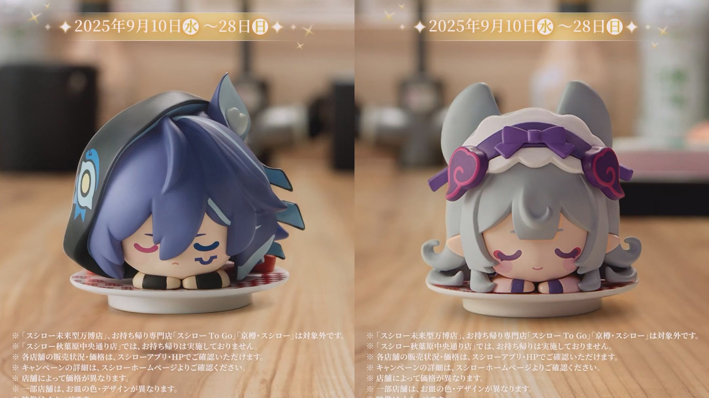
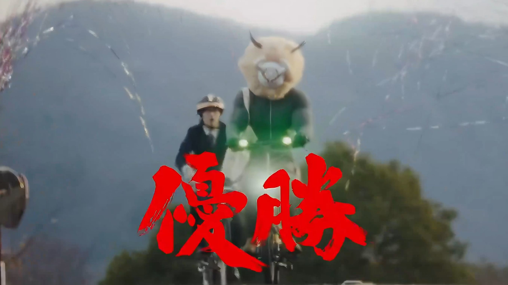

重点作品
重点项目不只展示标题，而是把“画面、形式、角色范围、公开入口”放在同一屏里。这里避免把团队成果写成个人KPI，只保留已有简历内容与公开链接能支撑的信息。
 地上波综艺特番
地上波综艺特番
 新年短片 / Shorts 系列
新年短片 / Shorts 系列
 实拍动画结合PV
实拍动画结合PV
Tabelog x Genshin 联动PV
把餐厅探索、页面玩法、线下体验和角色表达整合为完整用户体验，是IP进入本地生活场景的代表案例。
Tabelog曝光1.5亿 / SNS曝光3,159万 / PV播放1,227万 / 兑换率78%
 旗舰MV
旗舰MV
原神《月光的彼岸》哥伦比娅日配新曲MV
围绕角色、音乐和PUGC动画团队协作，把声优演唱、角色情绪和创作者表达整合成旗舰音乐内容。
全平台自然播放1,300万+ / 自然话题投稿16,950 / Spotify点击率高于品类均值+11%
 日本本土明星TVC
日本本土明星TVC
 TikTok原生竖屏短剧
TikTok原生竖屏短剧
原神 JP UGC竖屏短剧「末路厨神」
以美食为媒介描写IP和玩家间的羁绊，把真人实拍影视化转译为适配短视频平台的连续短剧。
单集平均约60万播放 / 互动率、完播率远高于目标
 全国地上波特别节目
全国地上波特别节目
全量作品
这部分保留所有作品入口，不用“精选”替代全量。每张卡片都带公开链接与缩略图，可按作品形态快速筛选。
TVC / CM · 真人实拍 TVC
原神 4.1宣传短片 / 三周年TVC「所感所想，撼动于心」
从三周年节点切入，把版本情绪、角色记忆和真人影像语言组织成玩家可感知的品牌内容。


UGC / PUGC · TikTok原生竖屏短剧
原神 JP UGC竖屏短剧「末路厨神」
以美食为媒介描写IP和玩家间的羁绊，把真人实拍影视化转译为适配短视频平台的连续短剧。






全部作品已匹配公开封面 / 缩略图。 所有外部链接均以新窗口打开。
能力结构
作品集的重点不是堆视频，而是让审阅者看到：影像判断、品牌转译、外部合作和新工具工作流如何共同服务日本市场的真实传播。
Operating Model
从版本资产与用户文化出发，定义可被日本市场理解的内容语境；再把电视台、艺人/声优、品牌方、制作公司、创作者与平台接口组织进同一套执行结构。结果不是一次性素材，而是能在多个触点重复出现的品牌记忆。
AI工作流用于概念验证、视觉参考、分镜推演、音乐方向和跨平台创意生产，目标是提高判断速度与方案密度，而不是替代创意责任。
品牌转译把全球IP资产翻译为日本市场可理解、可传播、可合作的表达。
娱乐接口对接电视台、艺人/声优、品牌方、代理商、制作公司和创作者生态。
影像导演用镜头、节奏和制作判断保护作品质感，让内容先被看见。
新工具掌控把LLM、AIGC和自研工具沉淀为更快的创意生产与验证流程。